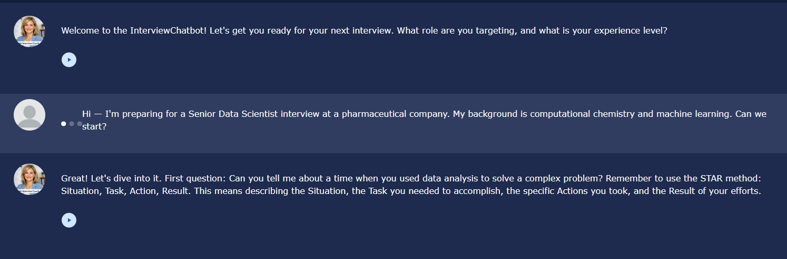

Artifact 01 · AIML-500 · July 2026
InterviewChatbot: An AI Interview Coach Built with Design Thinking
A conversational AI coach I designed, built, tested, revised, and deployed. It is live, and you can use it right now.
The gap is not questions. It is practice.
Job seekers are not short on interview questions — a search returns thousands. What they lack is a safe, repeatable place to practice answering and get specific, honest feedback. The realistic alternative, a mock interview with a friend, is hard to schedule and socially awkward to critique: it is difficult to tell someone you care about that their answer was vague.
I built InterviewChatbot to close that gap, and to test something about myself in the process: whether I could take a poorly defined human problem and carry it the whole distance to a working product.
What it does
- Asks one question at a time, in conversation, rather than presenting a list.
- Adapts its questions to the role and experience level the user describes.
- Delivers structured feedback after each answer: what worked, what was missing, and a concrete alternative phrasing.
- Holds the tone of a coach rather than an evaluator, so users are willing to keep practicing.
It requires no account and no installation. Its behavior is enforced through a deliberately constrained system prompt rather than left to the model's defaults.

TO DO — drop three screenshots into /images named shot-01.png, shot-02.png, shot-03.png. Until you do, these frames show placeholders. The course states that a description without tangible evidence is not sufficient, so this is not optional.
Why I made it
I created this artifact to answer a question that matters more in practice than model architecture does: can I take a poorly defined human problem, judge whether AI is genuinely the right instrument, build something that works, and revise it on evidence rather than intuition?
Concretely, my objectives were to:
- Apply the Design Thinking framework end to end, instead of jumping straight to building.
- Demonstrate proficiency with generative AI tools by constraining a general-purpose model into a reliable, single-purpose one.
- Produce a deployed artifact a stranger can use — not a notebook that runs only on my machine.
How I made it
Before building, I ran the same structured prompt (Context → Task → Constraints) across three different large language models to see how each handled identical instructions. That comparison told me how tightly I would have to specify the bot's behavior. Then I worked the problem through Design Thinking.
| Empathize | Identified the real user pain. The gap is not access to questions; it is access to practice with feedback. |
|---|---|
| Define | Wrote the problem statement: A job seeker needs a low-stakes way to rehearse answers and receive specific, actionable feedback, because the existing alternatives are either generic or socially costly. |
| Ideate | Considered a question bank, a résumé analyzer, and a live coach. Chose the coach, because feedback — not content — was the actual gap. |
| Prototype | Built the assistant on Mizou. Wrote the system prompt to enforce one-question-at-a-time pacing and a fixed feedback structure. |
| Test | Ran live sessions. Found that early builds produced feedback that was encouraging but vague — "Good answer, try to be more specific" — which reads as success and teaches nothing. |
| Iterate | Rewrote the prompt to require the bot to name the missing element and supply a concrete replacement sentence. Re-tested across several question types to confirm the fix held. |
What I used
- MizouNo-code chatbot platform — used to build, host, and publish the assistant.
- GPT / Gemini / ClaudeComparative prompt testing across three models with an identical instruction.
- Prompt engineeringContext → Task → Constraints framework; system-prompt design for behavioral constraint.
- Design ThinkingEmpathize / Define / Ideate / Prototype / Test.
- GitHub PagesHosting for this portfolio.
Why it matters
This artifact demonstrates that I can carry an AI problem the full distance — from an ambiguous human need to a deployed product — and explain every decision along the way.
That end-to-end ownership is the scarce skill. Many people can describe a model. Far fewer can decide whether AI is the right tool at all, design a solution around a real user, discover that the output is plausible but useless, and know what to do next. This project shows all three.
The hardest problem in generative AI is not capability. It is evaluation.
My background is computational: a Ph.D. built on molecular simulation and high-performance computing, then nearly two years as a data scientist at Merck — building drug-response models, LLM and retrieval-augmented pipelines that cut manual lab-report curation by roughly 80%, and biomarker-discovery workflows that reduced a diagnostic panel from ten peptides to two.
That work taught me something this artifact puts on display. My first version of this bot failed in exactly the way LLM systems most often fail in production. It sounded right. It was warm, fluent, and completely useless. I caught it only because I tested rather than admired.
Bringing scientific evaluation discipline to generative AI — treating "the output sounds good" as a hypothesis rather than a result — is what I uniquely bring, and it is what separates a demo from a product.
Take this pattern into your own project.
Anyone deploying a generative AI assistant will hit the problem I hit here: an LLM will happily produce output that is fluent, confident, and worthless, and it will do so in a way that survives casual inspection. Whether the assistant coaches interviews, summarizes clinical reports, or answers customer questions, the failure mode is identical.
So this artifact is written to be useful to others, not just about me. The process above is a reusable pattern:
- Define the failure mode before you define success. Know what "sounds fine but is useless" would look like for your task.
- Constrain behavior in the system prompt rather than hoping for it. Pacing, structure, and tone will not emerge on their own.
- Test for usefulness, not fluency. They are not the same thing, and fluency will fool you.
Sources
TO DO — add the Design Thinking source your course assigned (for example the Stanford d.school or IDEO framework, or the assigned reading), plus Mizou's documentation if you cite it. Delete this whole section if no sources apply.